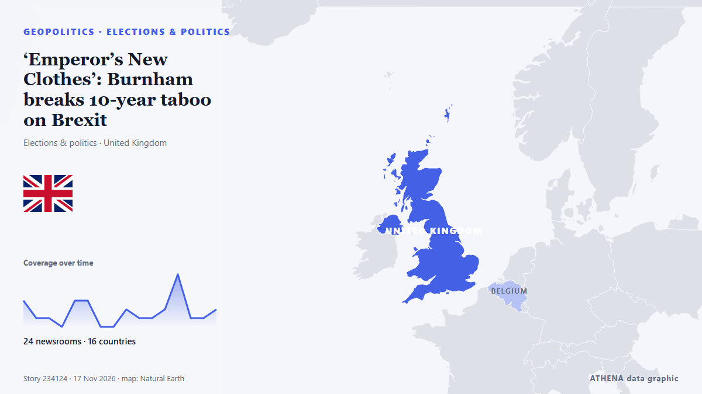

‘Emperor’s New Clothes’: Burnham breaks 10-year taboo on Brexit

Boris Johnson's 'oven ready' Brexit deal never tasted very good. από EUobserver
Τι άλλαξε 24 νέες αναφορές από 23 μέσα τις τελευταίες 24 ώρες.
Δείτε τις πηγές ›Τεκμήριωση: Επαρκής
Αναφέρθηκε ανεξάρτητα από 25 μέσα σε 16 χώρες από τις 15 Νοε, πρώτο το BBC Business· η κάλυψη εξασθενεί. Το ATHENA δεν βρίσκει ενδείξεις κινδύνου στην κάλυψη. Βεβαιότητα 89% (υψηλή): το επιβεβαιώνουν 25 ανεξάρτητα μέσα, μέση αξιοπιστία 74%. Μέσα ανά χώρα: Ηνωμένο Βασίλειο (8), Βέλγιο (3), Σιγκαπούρη (2). Κάλυψη: 15 Νοε έως 17 Νοε, 32 ώρες.
Γιατί έχει σημασία: Οι εξελίξεις στην ασφάλεια και τη διπλωματία μπορούν να μετατοπίσουν συμμαχίες, εμπόριο και αγορές πολύ πέρα από τις χώρες που εμπλέκονται.
Τι άλλαξε: 24 νέες αναφορές από 23 μέσα στο 24ωρο έως 17 Νοε.
Πρώτη διατύπωση: UK PM Burnham ready to confront 'obvious truth' of Brexit's costs
ΑυτοματοποιημένοΕπιλέχθηκε, ομαδοποιήθηκε και βαθμολογήθηκε με τη δημοσιευμένη μέθοδο της ATHENA από 25 ανεξάρτητα μέσα. Ο τίτλος είναι του μέσου· οι προτάσεις της ATHENA ακολουθούν σταθερά πρότυπα - δεν τις γράφει παραγωγική ΤΝ. Πώς λειτουργεί →
Πώς να διαβάσετε αυτή τη σελίδα
- Τι διαβάζετε
- 25 μέσα σε 16 χώρες ανέφεραν αυτό το γεγονός. Οι αναφορές παρακάτω εμφανίζονται με τη σειρά που δημοσιεύτηκαν· κάθε τίτλος ανοίγει το αρχικό άρθρο. Το ATHENA δεν γράφει δικά του ρεπορτάζ.
- Η εκτίμησή μας
- Για την καταγραφή — Οι αναφορές περιγράφουν ένα ολοκληρωμένο, εσωτερικό, εμπορικό ή προσωπικό ζήτημα. Το καταγράφουμε ώστε να βλέπετε ποιος το ανέφερε και πότε. Δεν παρακολουθούμε εδώ κίνδυνο ευρύτερης σύγκρουσης.
- Πόσα στοιχεία υπάρχουν
- Επαρκής Αρκετά ανεξάρτητα μέσα συμφωνούν, αλλά η εικόνα μπορεί ακόμη να αλλάξει.
Αφού αφαιρεθούν οι επαναλήψεις, τα άσχετα και τα παλιά στοιχεία, υπολογίζονται 24 από τις 29 αναφορές που παρατίθενται· το 100% των τίτλων αντιστοιχεί στο γεγονός.
- Τι δεν σημαίνει
- Το ATHENA μετρά πώς καλύπτεται ένα γεγονός, όχι αν είναι αληθές. Δεν είναι πρόβλεψη, κρίση για το ποιος έχει δίκιο ή συμβουλή.
- Τι θα την άλλαζε
- Αναφορές από άλλα ανεξάρτητα μέσα που δείχνουν διαφορετική εξέλιξη, ή σαφής επιβεβαίωση ή διάψευση από επίσημη πηγή.
Εκτίμηση R2 · ανανεώνεται με κάθε ενημέρωση της σελίδας. Το ATHENA δεν έχει δημοσιεύσει ακόμη ιστορικό επιδόσεων για αυτές τις εκτιμήσεις· όταν το κάνει, θα συνδέεται εδώ.
Με μια ματιά
Επιλέγεται, βαθμολογείται και γράφεται από τη δημοσιευμένη μεθοδολογία του ATHENA. Κανένας συντάκτης δεν παρεμβαίνει σε μεμονωμένα γεγονότα. Πώς παράγεται ›
| 15 Nov 22:00 UTC | 3 |
|---|---|
| 16 Nov 00:00 UTC | 1 |
| 16 Nov 02:00 UTC | 1 |
| 16 Nov 04:00 UTC | 0 |
| 16 Nov 06:00 UTC | 3 |
| 16 Nov 08:00 UTC | 3 |
| 16 Nov 10:00 UTC | 0 |
| 16 Nov 12:00 UTC | 0 |
| 16 Nov 14:00 UTC | 2 |
| 16 Nov 16:00 UTC | 1 |
| 16 Nov 18:00 UTC | 1 |
| 16 Nov 20:00 UTC | 2 |
| 16 Nov 22:00 UTC | 6 |
| 17 Nov 00:00 UTC | 1 |
| 17 Nov 02:00 UTC | 1 |
| 17 Nov 04:00 UTC | 3 |
| 17 Nov 06:00 UTC | 1 |
Γιατί αυτοί οι αριθμοί
Σημασία
Πόσο πολύ και πόσο εμφανώς αναφέρεται η είδηση.
Κίνδυνος
Τι περιγράφουν οι αναφορές, βαθμολογημένο για πιθανή ζημιά. Δεν είναι πρόβλεψη.
Βεβαιότητα
Πόσο καλά την στηρίζουν οι ανεξάρτητες πηγές.
Η κάλυψη — ποιος το ανέφερε και πότε
ο τίτλος όπως δημοσιεύτηκε · ανοίγει το πρωτότυπο- BBC Business · Ηνωμένο ΒασίλειοFaisal Islam: What's in the Brexit reset food deal and are there trade-offs?
- Evening Standard (London) · Ηνωμένο ΒασίλειοBurnham calls out Brexit failure: ‘The emperor has no clothes’
- The Straits Times · ΣιγκαπούρηUK PM Burnham ready to confront 'obvious truth' of Brexit's costs
- RTÉ News · ΙρλανδίαUK lost more than it gained from Brexit, Burnham says
- Politico Europe · ΒέλγιοThe City of London isn’t up for more Brexit trauma
- The Business Standard (Bangladesh) (working feed) · ΜπανγκλαντέςUK PM Burnham ready to confront 'obvious truth' of Brexit's costs
- Cyprus Mail · ΚύπροςBurnham ready to admit Brexit has failed as UK seeks closer EU ties
- Guardian Business · Ηνωμένο ΒασίλειοAndy Burnham to say Brexit ‘has not worked’ and he will sign new deal with EU
- Novinite · ΒουλγαρίαBurnham: "The Brexit We Were Given Has Not Worked"
- The Jerusalem Post · ΙσραήλUK PM Burnham says Britain lost more than it gained from Brexit, seeks EU reset
- Times of India · ΙνδίαBrexit rethink? UK PM Burnham admits Britain lost more than it gained
- The National · Ηνωμένα Αραβικά ΕμιράταAs Burnham heads to the EU, can he win the battle for Brexit’s truth?
- Project Syndicate · INTCan Brexit Be Reversed?
- Taipei Times · ΤαϊβάνBurnham to seek new EU pact after Brexit failure
- EUobserver · Βέλγιο‘Emperor’s New Clothes’: Burnham breaks 10-year taboo on Brexit
- The Canadian Press (via CityNews) · ΚαναδάςUK leader Andy Burnham says Brexit hasn’t worked ahead of a reset summit with the EU
- Anadolu Agency (English) · ΤουρκίαBritain has lost more than it has gained since Brexit: Prime minister
- The Irish News (Belfast) · Ηνωμένο ΒασίλειοBurnham criticises hard Brexit deal which ‘diminished’ UK’s global standing
- TRT World · ΤουρκίαBrexit has failed Britain, Andy Burnham declares in call for closer EU ties
- The Straits Times · ΣιγκαπούρηBrexit the sequel? Leave voices reorganise as Burnham chases EU reset
- Politico Europe · ΒέλγιοBrexit diminished us, Burnham says as he tees up closer EU ties
- Evening Standard (London) · Ηνωμένο Βασίλειο‘Brexit has not worked’: Burnham sets out conditions for Britain’s new deal with EU in major London speech
- Gulf News · Ηνωμένα Αραβικά ΕμιράταBrexit the sequel? Leave voices reorganise as Burnham chases EU reset
- Al Jazeera English · ΚατάρUK seeks closer ties with EU after Brexit fail
- China Daily — page reader · ΚίναBritain has lost more than gained since Brexit: PM
- TASS (English) · ΡωσίαUK to begin talks with EU on improving Brexit deal — British prime minister
- Yorkshire Post · Ηνωμένο ΒασίλειοAndy Burnham says Brexit deal is like ‘Emperor’s new clothes’
- The Scotsman · Ηνωμένο ΒασίλειοAndy Burnham‘s ‘Black Friday’ Brexit sellout will cost UK far more than it might save – Brian Monteith
- The Scotsman · Ηνωμένο ΒασίλειοHow Andy Burnham’s renegotiated Brexit deal can lay the foundations for a return to the EU